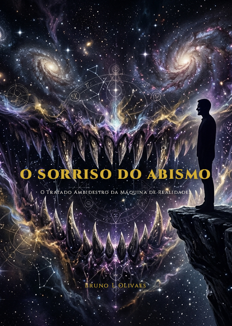
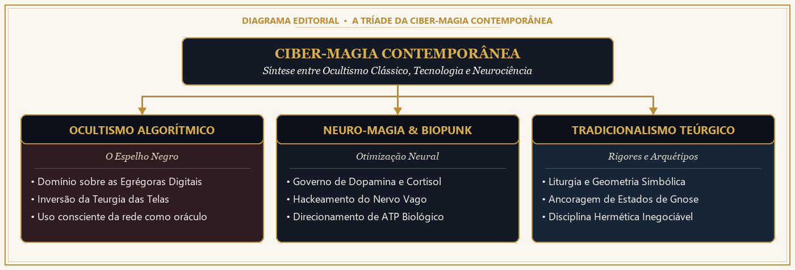
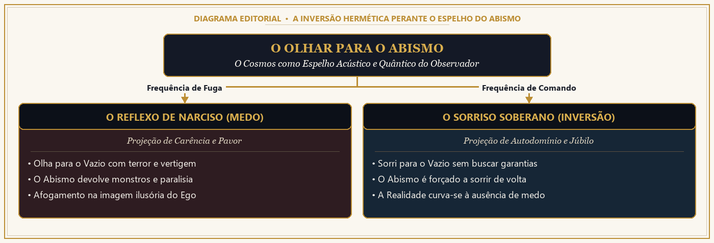
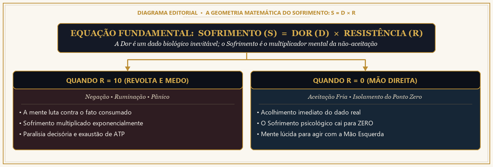

O Tratado Ambidestro da Máquina de Realidades
Por que mentes brilhantes travam diante do caos enquanto operadores silenciosos convertem pressão em poder? Descubra a síntese definitiva entre Filosofia Nietzschiana, Neurobiologia Autonômica e Termodinâmica da Atenção.

O DIAGNÓSTICO TERMODINÂMICO
Você não está cansado por excesso de trabalho. Você está exausto porque o seu sistema nervoso foi sequestrado para operar como bateria de sistemas alheios.
Você passa o dia em um estresse crônico invisível. As egrégoras digitais e o Biopoder usam o seu celular como um Espelho Negro para drenar o seu ATP celular e te manter reativo, exausto e preso em loops de ansiedade.
A sua energia vital mais visceral está sendo esmagada pela culpa e por roteiros impostos por terceiros. Sem perceber, você assumiu a postura do "Camelo" de Nietzsche: carregando pesos que nunca foram seus.
Toda dor psicológica prolongada nasce da colisão entre a realidade bruta e a sua recusa interna em aceitá-la antes de agir. Resistir cegamente ao fato consumado multiplica a dor e zera a sua capacidade estratégica.
ENGENHARIA VISUAL DE ALTA PRECISÃO
Esqueça livros teóricos abstratos. Cada conceito neurobiológico, cibernético e filosófico foi mapeado em 38 esquemas visuais de alta definição desenhados sob medida para fixação imediata.

Como zerar a resistência límbica ($R \to 0$) para extinguir o sofrimento psicológico e liberar 100% de energia executiva.

O circuito de biofeedback facial e nervo vago que reverte o sequestro da amígdala diante do abismo.

38 lâminas escuras com tipografia ouro e ciano que transformam filosofia densa em protocolo prático.
ARQUITETURA COMPLETA DA OBRA
Ao longo de 36 capítulos diretos e cirúrgicos, você atravessará os 6 estágios de reconstrução do seu sistema operacional mental:
A mecânica oculta da procrastinação, a matemática do sofrimento ($S = D \times R$), a decodificação do Aforismo §146 de Nietzsche e o uso do biofeedback autonômico para estancar o pânico.
Como funcionam as egrégoras algorítmicas, a economia da dopamina barata, a blindagem contra manipulação de massa e a recuperação da sua capacidade de foco profundo.
Protocolos respiratórios e autonômicos (Nadi Shodhana, freio vagal em 120 segundos), modulação de cortisol, neuroplasticidade dirigida e o uso consciente do efeito placebo.
A transição prática do Camelo (submissão e culpa) para o Leão (ruptura soberana) e a Criança (criação de novos valores), unindo rigor analítico e intuição criadora.
Como transformar rejeição, incerteza e isolamento em combustível termodinâmico. A diferença entre solidão reativa e Solitude Soberana.
O protocolo diário de execução inabalável. Como arquitetar uma vida que você escolheria repetir pela eternidade sem hesitar.
O Tratado Ambidestro da Máquina de Realidades — Completo com 36 Capítulos e 38 Diagramas em Alta Definição.
Assim que o pagamento for confirmado (em segundos via PIX ou Cartão), a plataforma Kiwify envia automaticamente o acesso para o seu e-mail com o PDF de Luxo (92 páginas) e o arquivo EPUB prontos para leitura no celular, tablet, Kindle ou computador.
Não. Embora a obra seja profunda, cada conceito é traduzido com clareza cirúrgica e acompanhado por 38 diagramas visuais explicativos que tornam a aplicação imediata.
Você conta com a Garantia Incondicional de 7 Dias direto pela Kiwify. Se por qualquer motivo sentir que a obra não superou suas expectativas, basta um clique para receber 100% do seu investimento de volta.